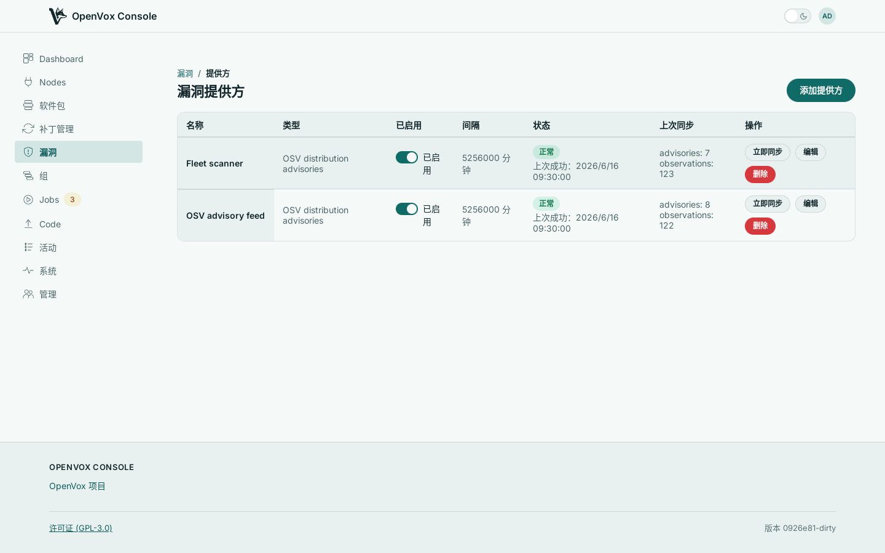

使用
跟踪漏洞
设置漏洞提供方，解读机群的发现，并了解每个提供方能看到什么、看不到什么。
控制台会报告哪些 Nodes 受到哪些已知漏洞的影响，数据由一个或多个提供方合并而来。它把每个提供方的数据与每个 Node 上报的软件包进行匹配，因此 Nodes 需要开启软件包上报：参见添加 Nodes。
查看发现需要 vulnerabilities:read；配置提供方需要 vulnerabilities:manage。两者都不包含在 nodes:read 中：发现比清单更为敏感。
选择提供方
| 提供方 | 数据来源 | 凭据 |
|---|---|---|
| OSV | 公共 OSV 数据库，或你自己的镜像 | 无 |
| Tenable | 你的 Tenable 租户 | API 密钥 |
可以同时运行任意数量的提供方，包括两个使用不同数据位置的 OSV 提供方。被多个提供方上报的漏洞只显示一次，并列出每个提供方各自的严重程度和修复版本。
在你启用提供方之前，任何数据都不会离开控制台。
为凭据做准备
带有凭据的提供方需要一个密钥，用于在数据库中加密封存这些凭据。生成一个密钥，并在 CONSOLE_SECRETS_KEY_FILE 中指定它：
openssl rand -base64 32 > secrets.key
chmod 600 secrets.key
没有它，OSV 照常工作，而需要凭据的提供方会被拒绝，错误信息会指出该设置。
请将该密钥与数据库备份一起备份，但要分开存放。丢失它不会丢失任何发现，但所有已存储的凭据都将无法读取，这些提供方会一直失败，直到在新密钥下重新输入凭据。
添加提供方
- 打开漏洞，然后打开提供方。
- 添加你需要的类型的提供方，填写其设置和所需的凭据。控制台不会再次显示已存储的凭据；编辑时将凭据字段留空即可保留已存储的值。
- 启用它。


它会立即同步，之后按计划同步，OSV 默认每小时一次。发现会在提供方同步时刷新，而不是在每次 Puppet 运行时刷新。
OSV 会下载什么
OSV 只下载你的机群所运行的发行版的数据，默认通过 HTTPS 从 storage.googleapis.com 下载。某个发行版的首次同步会下载其完整归档——Debian 约 70 MB，Ubuntu 约 700 MB——之后的同步只下载有变化的部分。
离线隔离站点
将 OSV 提供方的数据位置指向 OSV bucket 的内部镜像，每个发行版的布局保持一致：它的 all.zip、它的 modified_id.csv，以及每条变更记录一个 JSON 文件。一个普通的静态 Web 服务器就足够了，复制每个发行版的目录即可填充它：
gsutil -m rsync -r gs://osv-vulnerabilities/Debian ./Debian
目录名称中包含空格，例如 Rocky Linux 和 Red Hat。
Tenable
Tenable 提供方首次会导入所有未关闭的发现，之后只导入变化。每个 Tenable 资产都会按其名称与每个 Node 的 certname 和上报的 FQDN 进行匹配。没有匹配到任何 Node 或匹配到多个 Node 的资产会被跳过，并计为未匹配；这个计数不断增长，通常意味着 Tenable 看到的名称与你的 certname 不同。
解读发现
漏洞页面列出整个机群的发现，最严重的在前，并显示每个发现影响多少个 Nodes。默认显示有可用修复的发现，也就是打补丁能够改变的那些；将修复设为全部即可包括尚未发布修复的发现。
没有任何已启用提供方能够评估的 Node 会显示为未评估，并附上每个提供方的原因，而绝不会显示为没有问题：
| 原因 | 含义 |
|---|---|
| 不支持的操作系统（unsupported OS） | OSV 覆盖 Debian、Ubuntu、AlmaLinux、Rocky Linux 以及 RHEL 7 到 10 |
| 无软件包数据（no package data） | 该 Node 未上报任何软件包；请为它开启上报 |
| 需要升级代理（agent upgrade required） | 该 Node 的软件包数据过旧，无法可靠匹配；升级其 Node 代理后，会在下一次 Puppet 运行时得到修复 |
| 未被 Tenable 发现（not seen by Tenable） | 没有任何 Tenable 资产与该 Node 匹配 |
| 尚未同步（not yet synced） | 提供方尚未完成同步 |
对 OSV 的预期
- 在 Debian 和 Ubuntu 上，许多被发行版评为可忽略、或已决定不修复的漏洞仍然会出现，表现为尚未发布修复的发现。这就是列表默认从「有可用修复」开始显示的原因。
- RHEL Nodes 只与主仓库进行匹配。使用扩展支持仓库或附加仓库的 Nodes 可能会显示它们实际并不存在的发现。
- AlmaLinux 不发布严重程度，因此其发现显示为未知。
针对旧内核以及其他早已删除的软件包的发现，通常来自删除时未清除（purge）的软件包，它们的配置文件仍然留在系统中。在该 Node 上用 apt purge '~c' 清除它们；这些发现会在提供方下一次同步时关闭。